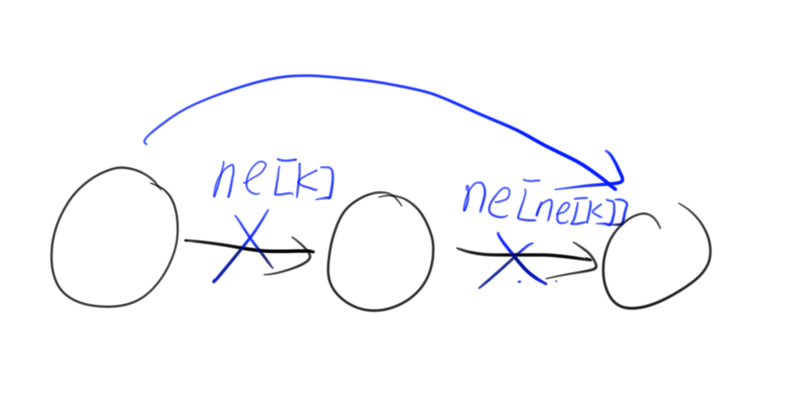

数据结构
链表
单链表
单链表的作用在于构建邻接表来存储图和树
实现方式
创建 q[] 存储数据 ； ne[] 存储链表指针；
单独构建 head 或直接调用 ne[0] 作为头节点指针,q[0] 作为头节点
创建 idx 作为 当前使用的空节点
init ： 头结点指针格式化为 -1; idx 格式化为1（如果不用ne[0]也可以格式化为0）
ps:链表指针都是指向q[]的下标，也就是第k个数
操作方式
注意以下操作都是对 第k个数
insert：
1 | void insert(int x,int k){ |

ps：ne[0] 作为头节点时可以直接 insert(x,0) 插入头结点；
delete：
1 | void del(int x){ |

ps：ne[0] 作为头节点时可以直接 delete(0) 删除头节点。
双链表
双链表就是把单链表的ne[]指针换成了 l[] , r[] 指针
同时把q[0] 作为头节点
操作方式
init:
1 | l[1] = 0; |

初始完成后大概像这样
insert:
1 | void insert(int x,int k){ |
这里因为有插入到第k个数 左边/右边 的操作 但我们这样写完默认是插入到右边，也就是直接调用insert(x,k+1)时会插入到第k个数右边
而如果我们想插入到左边，就等价于插入到第k个数左边的数的右边 所以我们直接insert(x,l[k+1])
向头尾插入分别是 insert(x,0) insert(x,l[1])
至于为什么先++idx以及调用总是k+1，毕竟q[0] q[1] 都被占用了嘛
delete:
1 | void delete_(int x){ |
delete_(k+1) 实现方式同单链表
output:
1 | for(int i = r[0]; i != 1; i = r[i]) cout<<q[i]; |
栈
模拟栈
栈:先进后出
实现方式
数组 stk[] 存数据，tt 指向栈顶
进栈 stk[++tt] = x
出栈 tt--
单调栈
栈中数据具备一定的单调性
一般用于求某个序列中离n最近的 大于/小于 n的数在什么地方
实现方式
以求 最近的最小的数 为例
首先我们知道
所以我们可以由这个规律剔除一部分一定不是答案的元素
图中可知最近的地方出现了一个相对较小的数后，答案前的大于他的数都一定不是答案
因此我们把所有的小于此时读入的数的元素卡掉
也就是在某个元素进栈时把所有大于他的元素剔除后再进栈
最后可以得到一个单调递增的栈
具体操作
剔除: while (tt && stk[tt] >= x) tt -- ;//>=剔除大于元素，构建单调递增栈
判断： if(!tt) 栈空，答案不存在; else stk[tt]即答案
最后记得 stk[tt++] = x 进栈
队列
模拟队列
队列：先进先出
实现方式
数组 q[] 存数据， hh 指向队头 ，tt 指向队尾
初始化 hh = 0 , tt = -1
进队 q[++tt] = x
出队 hh++
若 hh > tt 则队列为空
单调队列
队列中的数据严格单调
动态维护长数列中的最值
思考方式
1.先用普通队列尝试做法
2.把数列中无用元素剔除–>具有了单调性
3.用O(1)的时间取出 队尾/队头 最值
实现方式
数组 q[] 存数据下标 ， hh ， tt 头尾指针
剔除队列中所有 大于/小于 当前进队元素的数据
得到具有单调性质的队列
具体操作
根据具体题意让队头元素出队：if(hh <= tt && i - k + 1 > q[hh] ) hh++;
剔除： while(hh <= tt && a[q[tt]] >= a[i]) tt--(>=a[i] 递增；<=a[i]递减；)
然后q[++tt] = i入队
取队头元素 a[q[hh]] 即最值